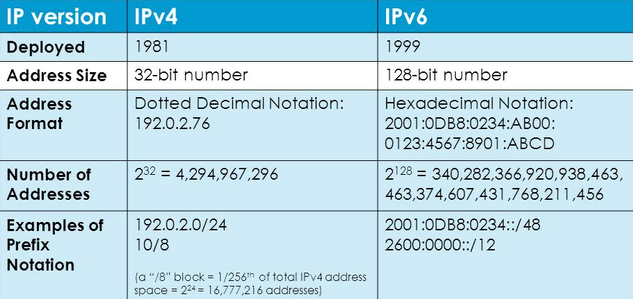
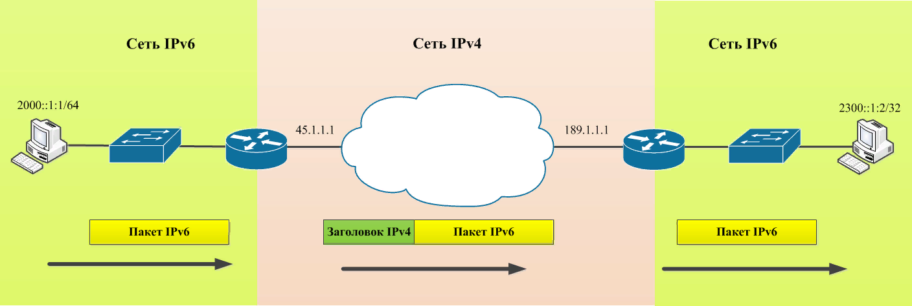
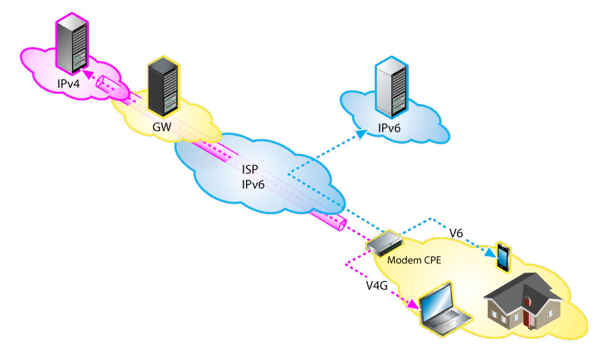

Протокол сетевого взаимодействия TCP/IPv4 используется для передачи зашифрованных данных в сети интернет и локальных подсетях уже более тридцати лет. На его основании создается и поддерживается уникальная адресация сетевого оборудования (узлов). Еще в начале 90-х годов прошлого века был определен основной недостаток данного протокола – ограничение по количеству возможных ip-адресов, которое не может превысить 4,23 миллиарда. В результате была разработана новая система протоколирования сетевого взаимодействия – интернет-протокол IPv6 (Internet Protocol version 6). Однако массовый переход на более прогрессивную технологию обусловлен некоторыми сложностями. Хотя, например, в Соединенных Штатах уже более половины пользователей применяют именно протокол IPv6.
Как уже было сказано, ключевым недостатком протокола четвертой версии TCP/IPv4 является ограниченная масштабируемость уникальных адресов, присваиваемых для идентификации в сетях взаимодействия. Для создания ip-адресов на уровне программных записей используется 32-х битная система в формате 0.0.0.0 – 255.255.255.255. При построении локальных подсетей вводится дополнительный атрибут «маска подсети», записываемая после символа «/». В результате даже крупные ЛВС, объединенные в Ethernet, чаще всего имеют один публичный ip-адрес, выдаваемый провайдером и закрепленный на уровне шлюза (маршрутизатора). Самостоятельный обмен данными на уровне отдельных устройств частной подсети с выходом в паблик-интернет требует сложного администрирования. Для решения задач маршрутизации, требующих получения статических IP-адресов, понадобятся дополнительные финансовые затраты.
В интернет-протоколе нового поколения IPv6 для создания адресной маршрутизации используется 128-битная система записи. В IPv6-адресе записи представляют собой восемь 16-битных блоков, разделенных двоеточиями: 2dfc:0:0:0:0217:cbff:fe8c:0. Общее количество ip-адресов, возможных для распределения, может составить в общей сложности 2128 (приблизительно 340 282 366 920 938 000 000 000 000 000 000 000 000). Повсеместное использование данного стандарта позволит полностью решить задачу нехватки сетевых адресов в обозримом будущем.
С целью упрощения записи адреса в протоколе IPv6 используется вариант сжатия кода, когда смежные последовательности нулевых блоков заменяются парами символов двоеточия. Например, адрес групповой рассылки FFEA:0:0:0:0:CA28:1012:4254 в сжатой форме будет представлен в укороченном виде FFEA::CA28:1012:4254. Данный механизм упрощает процесс записи, хранения и обработки кода.
По правилам протокола IPv6 назначение сетевых адресов происходит автоматически и уникализируется за счет идентификации на уровне MAC-адреса конкретной единицы оборудования, для которой необходим выход в публичную сеть. Другими словами, каждый домашний компьютер, смартфон, холодильник или стиральная машина с функцией подключения к внешним устройствам получает собственный «белый» ip-адрес для коннекта с другими хостами через интернет. Доступна также произвольная генерация кодов путем администрирования с использованием маршрутизаторов.
Впечатляет минимальный диапазон адресов подсети, получаемых пользователем при подключении по протоколу IPv6. Например, при использовании маски подсети «/128» получаем более 256 адресов.
Спорным является вопрос отличия в скорости передачи трафика по каждому из протоколов. По умолчанию технология протокола IPv6 обеспечивает большую скорость обработки трафика на уровне отдельного оборудования сети в целом. Использование NAT в протоколе IPv4, который обеспечивает трансляцию адресов абонентов и хранение в памяти информации об установленных соединениях, приводит к большой загрузке оборудования. Поэтому в моменты пиковой нагрузки каждый пользователь отмечает резкое падение скорости соединения.
В протоколе IPv6 не применяется обязательная обработка пакетов и отслеживание уже открытых соединений при маршрутизации доступа к хостам. Отсутствие необходимости трансляции значительно снижает ресурсную нагрузку на сетевые устройства. Для пользователя это означает выравнивание скорости интернет-соединения. Провайдеры в такой ситуации могут использовать менее ресурсоемкое, а значит, более дешевое оборудование.
По сравнению с четвертой версией, в протоколе TCP/IPv6 реализован ряд дополнительных функциональных возможностей:
В настоящее время эксперты ведут дискуссии на предмет обеспечения безопасности данных в случае гибридного применения двух протоколов. Провайдеры выстраивают IPv6-туннели для предоставления пользователям IPv4 доступа к высокоуровневому контенту. Применение данной технологии увеличивает риски хакерских атак. Функция автоконфигурации, когда устройства самостоятельно генерируют IP-адрес на основе MAC-адреса оборудования, может быть использована для незаконного отслеживания конфиденциальных данных пользователей.
Несмотря на долгую историю разработки, которая берет начало в 1992 году, тестирование нового протокола состоялось одномоментно 8 июня 2011 года в Международный день IPv6. Эксперимент прошел удачно и предоставил возможность для выработки рекомендаций по дальнейшему совершенствованию данной технологии, ее массовому внедрению.
Первой компанией, внедрившей в 2008 году стандарт протокола IPv6 на постоянной основе, стал Google. Тестирование проводилось в течение четырех лет, было признано успешным. 6 июня 2012 года состоялся Всемирный запуск IPv6. Сегодня мировые лидеры в производстве сетевого оборудования Cisco и D-Link применяют данный сетевой стандарт в своих маршрутизаторах на базовом уровне. В мобильных сетях стандарта LTE поддержка протокола IPv6 является обязательной. IT-компании Google, Facebook, Microsoft и Yahoo используют IPv6 на своих основных web-ресурсах. Протокол получает все большее распространение в корпоративных сетях и при домашнем использовании.
Согласно исследованиям Google, на начало 2020 года доля IPv6 в общемировом сетевом трафике составляла около 30%. В России данный показатель значительно ниже, он составляет приблизительно 4,5% всего трафика. В то же время все большее количество отечественных регистраторов доменов и хостинг-провайдеров переводят свои DNS-серверы на протокол IPv6.
Возникает резонный вопрос: если протокол TCP/IPv6 обладает таким количеством преимуществ по сравнению с предшественником, почему бы просто не перейти на него всем миром? Основное препятствие лежит в сфере финансов и временных параметров. Для полномасштабного использования новой технологии требуются серьезные инвестиции в программно-техническую модернизацию компьютерного парка всех провайдеров.
Использование динамических ip-адресов по протоколу IPv4 позволяет временно сдерживать проблему нехватки уникальных сетевых идентификаторов. Другими словами, проблемы администрирования локальных сетей перекладываются на конечных пользователей, которые вынуждены настраивать сложные схемы маршрутизации подсетей и покупать дополнительные ip-адреса. В то же время рост количества конечных сетевых устройств происходит очень быстро. Внедрение технологий прямой коммуникации даже с обычными бытовыми приборами через интернет требует новых подходов в построении архитектуры их взаимодействия. В связи с этим повсеместный переход на использование стека протокола TCP/IPv6 неизбежен.